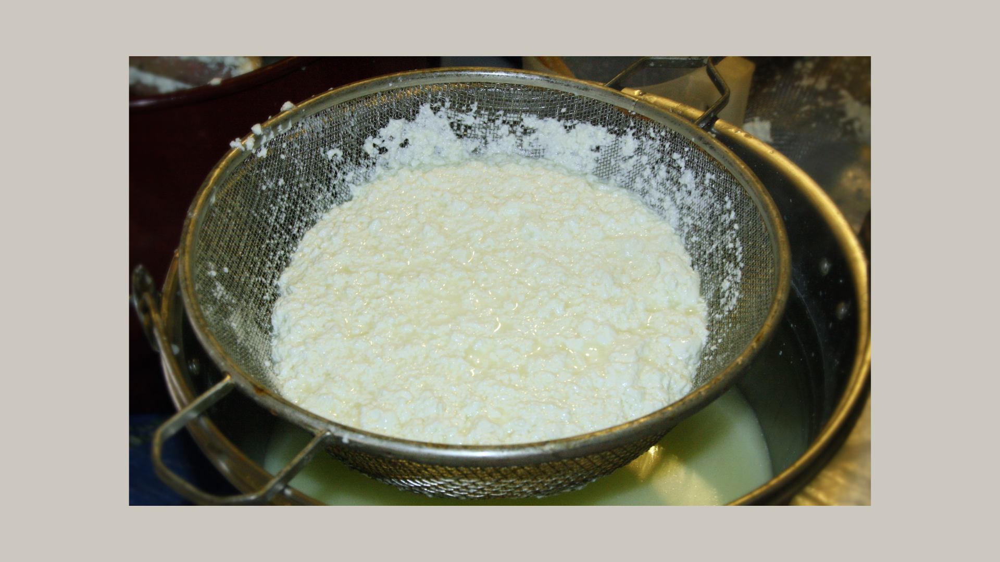
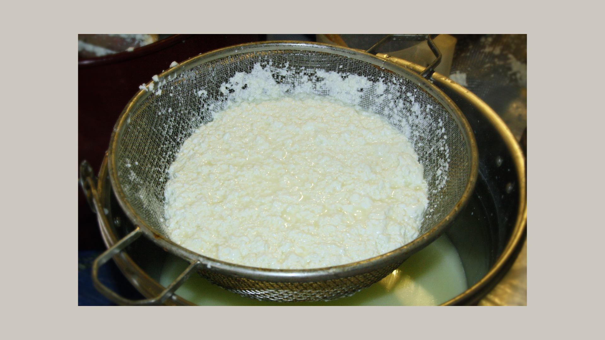
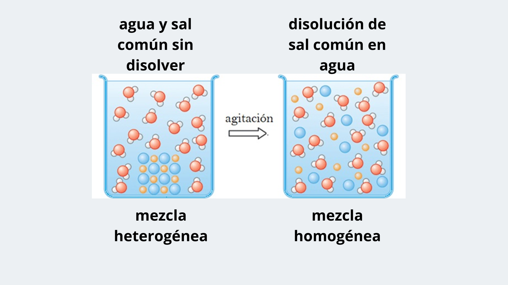
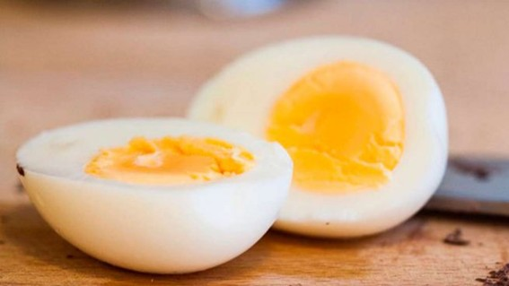
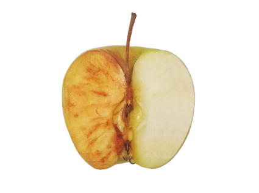

Actividad 8
Si calientas agua, esta se evapora y se convierte en vapor. Pero si agregas vinagre a la leche, la leche cambia y se forman grumos sólidos. ¿Son estos cambios iguales?

Si calientas agua, esta se evapora y se convierte en vapor. Pero si agregas vinagre a la leche, la leche cambia y se forman grumos sólidos. ¿Son estos cambios iguales?

Al agregar vinagre a la leche se observa la formación de un precipitado. Este proceso es clave en la fabricación del queso.
Pista: Piensa en las proteínas que estaban dispersas en la leche. ¿Cómo se agrupan después del cambio?
Aquí puedes ver un modelo para la mezcla de agua y sal.

Recuerda que un cambio químico implica la formación de nuevas sustancias, mientras que un cambio físico solo altera la apariencia o el estado.
Aquí tienes algunos ejemplos de cambios químicos que puedes encontrar en tu cocina.


Si tienes curiosidad y quieres saber más, aquí tienes un enlace a un visor de estructuras moleculares para poder ver la caseína. Visor de estructuras moleculares
Obra publicada con Licencia Creative Commons Reconocimiento Compartir igual 4.0